Лабораторная работа №3: Разработка требований к программной системе
Пользовательские истории (User Stories), критерии приёмки BDD (Given-When-Then), платформенные различия (Mobile vs Web) и матрица приоритетов MoSCoW
Паспорт Лабораторной работы №3
В рамках лабораторной работы реализован полный цикл системного анализа и формализации требований к кроссплатформенной экосистеме CampusMeet / EventHub. Требования сформулированы на основе результатов опроса $N=68$ (Лаб. 1) и информационной архитектуры/CJM 7 персонажей (Лаб. 2).
Матрица ключевых User Stories экосистемы CampusMeet
| Код | Роль (Актор) | Пользовательская история (User Story) | Приоритет | Платформа |
|---|
Сравнительные особенности платформ (Mobile vs Web)
Мобильный клиент (React Native / Expo)
- Offline-First: Билет и крипто-ключи кешируются в
SecureStore; - Аппаратные датчики: Камера 60 fps, Haptic вибромотор, авто-яркость 100%;
- Эргономика: Зона досягаемости большого пальца (Thumb Zone), жесты Pull-to-Refresh;
- Уведомления: Системные push-оповещения (APNs/FCM) и локальные таймеры.
Десктопный Web-кабинет (Next.js 14)
- Широкоформатный UI: 12-колоночная адаптивная сетка (1366px — 4K);
- Управление манипуляторами: Мышь, Drag-and-Drop конструктор сетки, Hover-состояния;
- Клавиатурная акселерация: Сквозной поиск Omnibox
⌘K/Ctrl+K, выходEsc; - Доступность: Полное соответствие стандартам WCAG 2.1 AA (контраст $\ge 4.5:1$, Tab-фокус).
Спецификация системы на языках PlantUML и Mermaid
Полный комплекс из 29 векторных диаграмм: прецеденты, деятельность, доменные классы, рантайм-объекты, последовательности, компоненты и физическое развертывание
1. Диаграмма вариантов использования (Use Case Model)
Расширенная системная модель прецедентов экосистемы CampusMeet: декомпозиция акторов (Слушатель, Волонтер, Организатор, Спикер, Капитан хакатона, Куратор деканата) и связей со стереотипами <<include>> и <<extend>>.
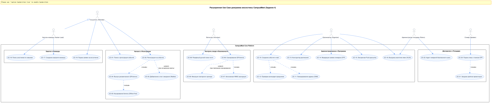
2. Диаграммы деятельности ключевых процессов (Activity Diagrams)
Моделирование критических алгоритмов: квотирование и автоматический переход в лист ожидания Waitlist (слева), оптический чекин волонтером со звуковым/вибро-откликом (справа).
Регистрация и Waitlist
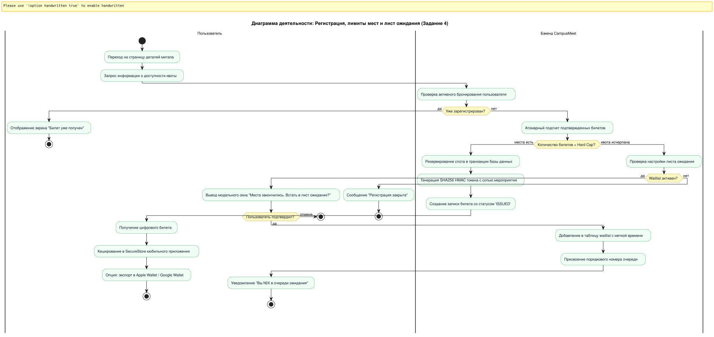
Оптический чекин и детекция дубликатов
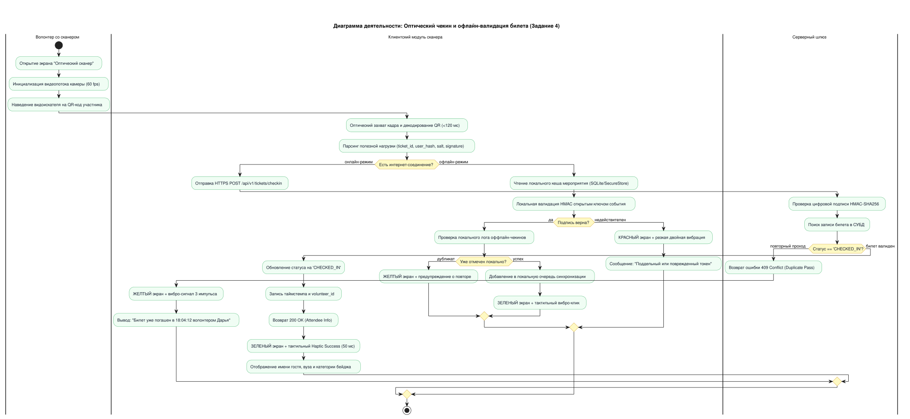
3. Доменная модель классов и рантайм-объекты (Class & Object Diagrams)
Слева: полная объектная модель ядра экосистемы (User, Event, Venue, Ticket, WaitlistEntry, CheckInRecord). Справа: снимок рантайм-объектов во время митапа «FPMI AI Night 2026».
Доменные классы ядра
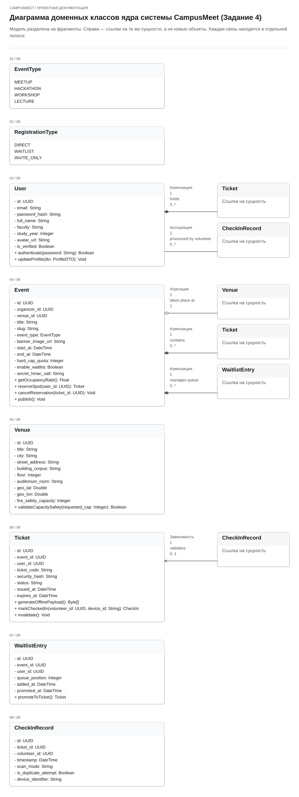
Рантайм-объекты (FPMI AI Night)
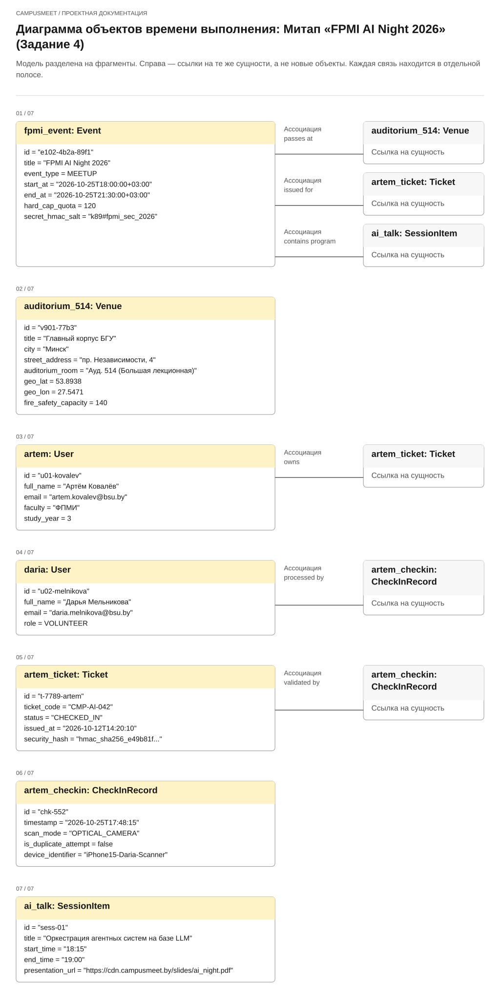
4. Диаграммы последовательности взаимодействий (Sequence Diagrams)
Слева: автономное оптическое сканирование камерой и математическая верификация HMAC. Справа: создание карточки события с вызовами OSM Nominatim API и Nager.Date API.
Офлайн-чекин со сканером (<500 мс)
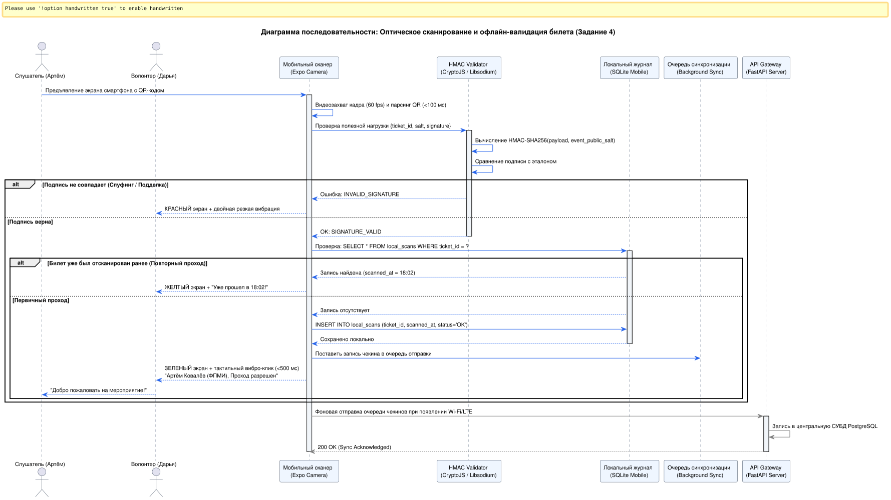
Геокодинг OSM и праздники Nager.Date
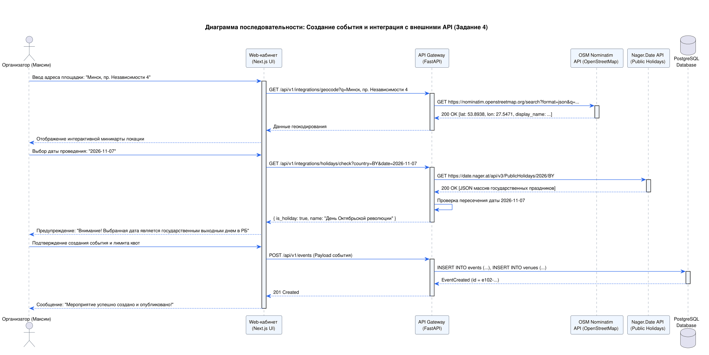
5. Архитектурные диаграммы: Компоненты, Развертывание и База данных
Диаграмма компонентов (FastAPI + Clients)
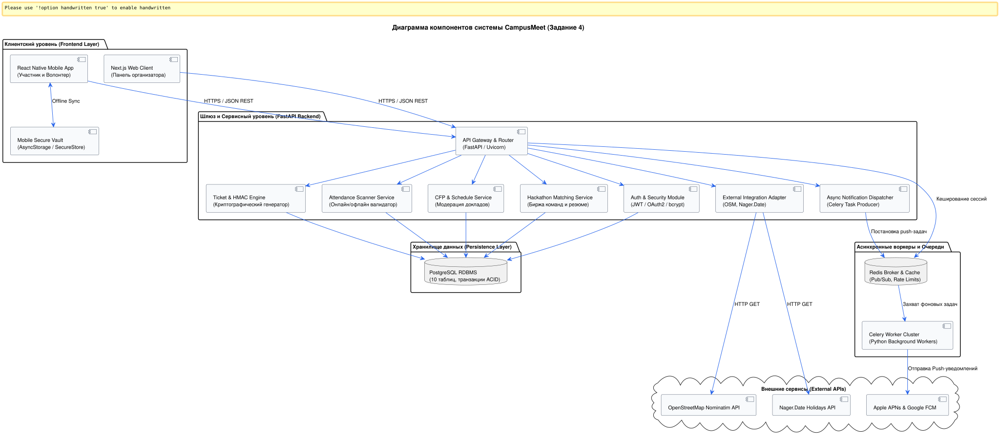
Топология физического развертывания
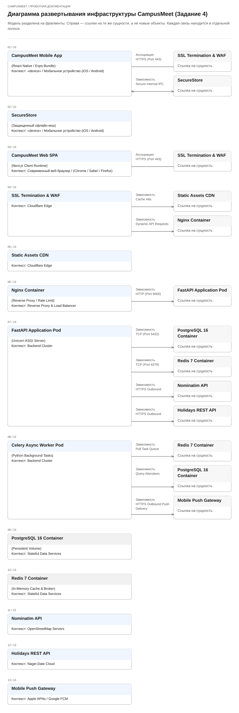
Реляционная модель базы данных (ERD, 10 таблиц)
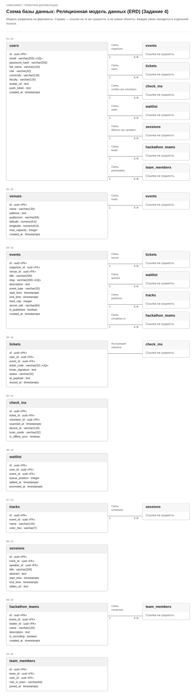
Проектирование методами EventStorming и Event Modeling
Предметно-ориентированное исследование (Domain-Driven Design), выявление рисков (Hotspots), декомпозиция на Bounded Contexts и информационные срезы Адама Димитрука
EventStorming: Уровень 1 — Крупномасштабное исследование (Big Picture)
Сквозная хронология жизненного цикла митапа: от инициации анонса до закрытия и выгрузки отчета. Оранжевые стикеры — события предметной области (Domain Events), малиновые стикеры — критические конфликты (Hotspots), включая Hotspot H3: полное отсутствие сотовой связи в цокольной аудитории.
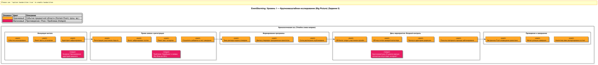
EventStorming: Уровень 2 и 3 — Процессы и Ограниченные контексты
Слева: процессные цепочки с командами (голубой), агрегатами (желтый) и автоматическими политиками (фиолетовый). Справа: декомпозиция на 4 ограниченных контекста (Bounded Contexts) по канонам DDD.
Process Modeling (Команды и Политики)
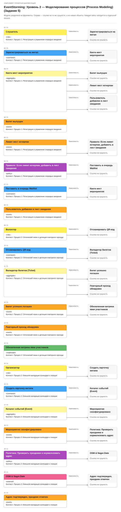
Software Design (Bounded Contexts)
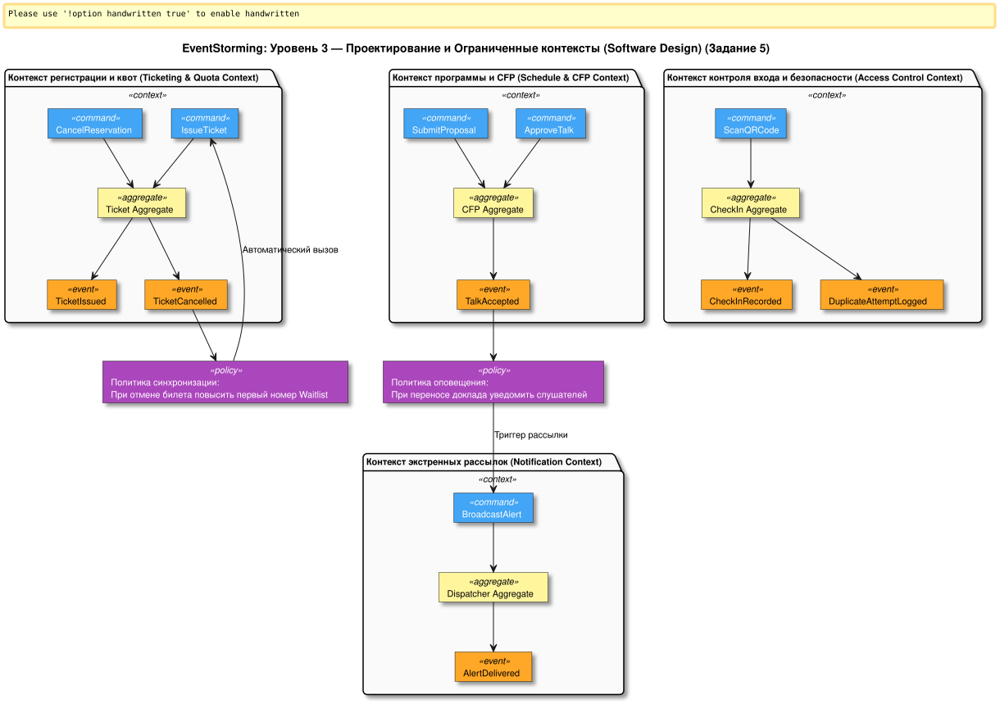
Event Modeling (Adam Dymitruk): Спецификация 4 фундаментальных шаблонов (Slices)
Сквозное информационное моделирование от UI-экранов через синие команды и оранжевые неизменяемые события в зеленые модели чтения. Представлены 4 среза: Command Pattern (Регистрация), View Pattern (Витрина билета), Automation Pattern (Ротация Waitlist), Translation Pattern (Push во внешний шлюз FCM).
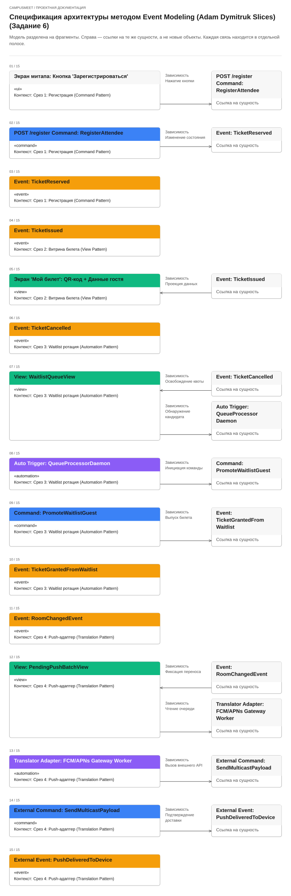
Архитектура C4 Model и Техническое задание (SRS)
Иерархическая декомпозиция архитектуры Саймона Брауна (C1 Context, C2 Container, C3 Component, C4 Code) и нормативное ТЗ по стандарту IEEE 830 / Карлу Вигерсу
C4 Model: Уровни C1 (Context) и C2 (Container)
C1: Системный контекст (System Context)
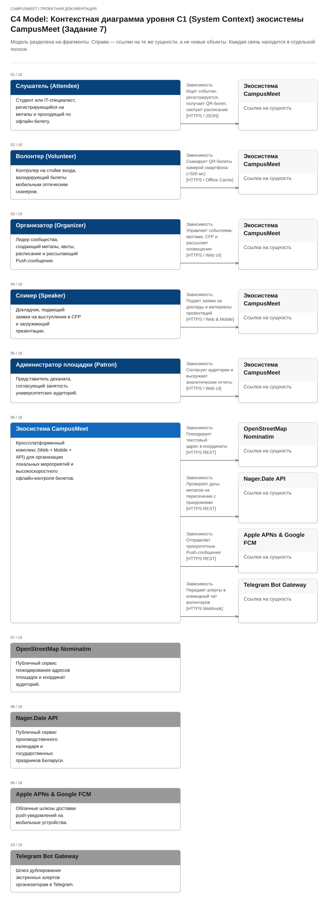
C2: Контейнеры экосистемы (Containers)
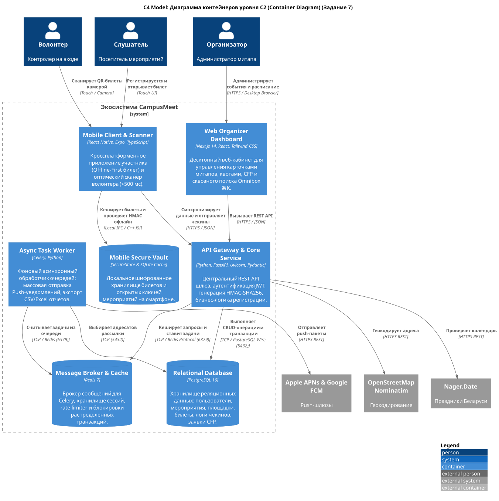
C4 Model: Уровни C3 (Component) и C4 (Code)
C3: Компоненты API Gateway (FastAPI)
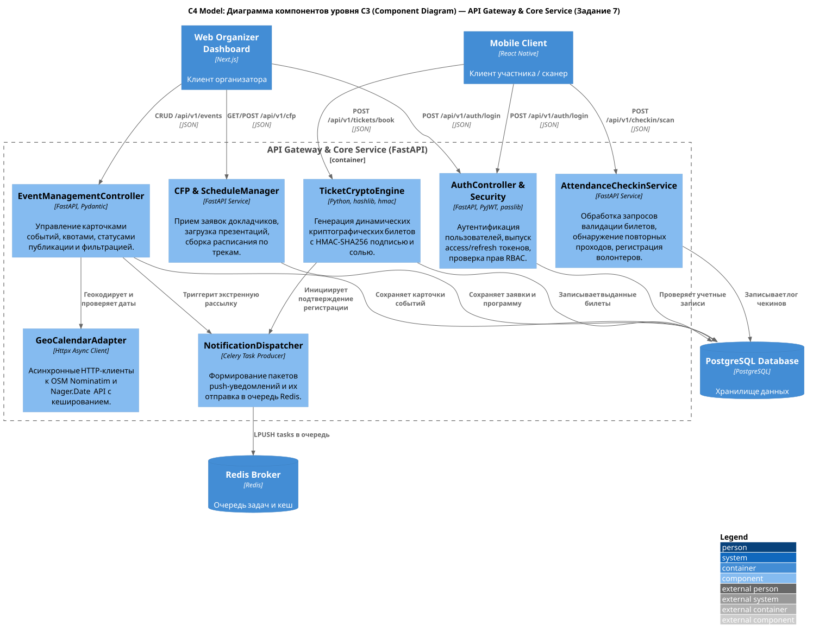
C4: Код крипто-движка (TicketCryptoEngine)
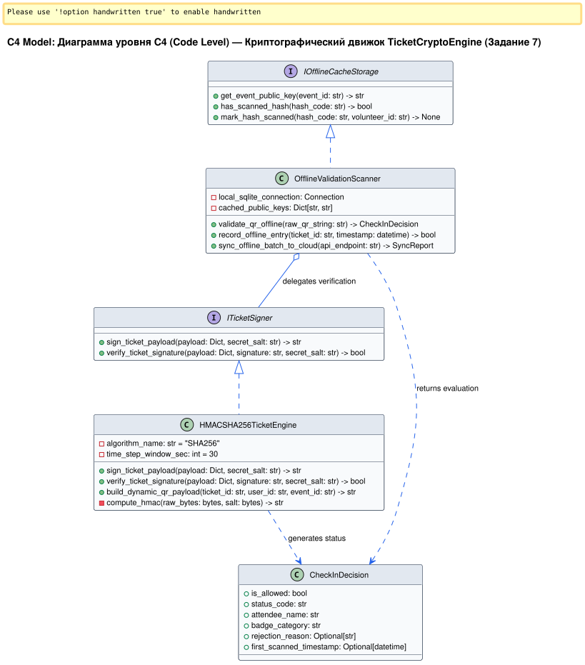
Техническое задание (SRS по стандарту IEEE 830 / Карлу Вигерсу)
Нормативная спецификация требований, формализованная в соответствии со стандартами IEEE Std 830-1998 и ISO/IEC/IEEE 29148. Включает 10 функциональных блоков требований, модель данных, внешние интерфейсы (UI, REST API, аппаратная камера и вибромотор) и атрибуты качества.
Матрица трассируемости требований (Traceability Matrix)
| Идентификатор ТЗ | User Story | Use Case | Компонент системы | Тестовый сценарий проверки |
|---|